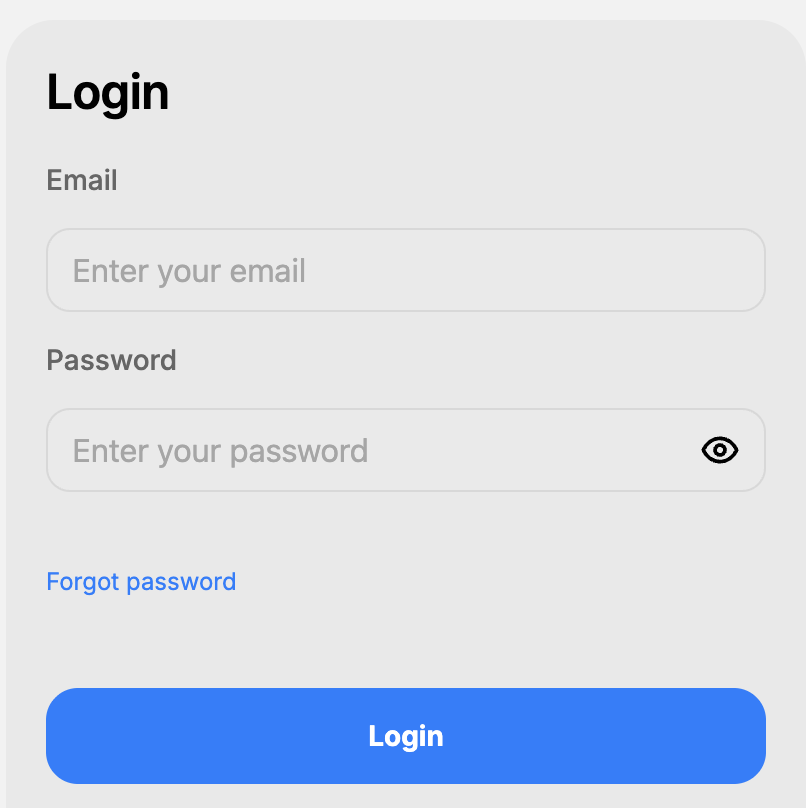
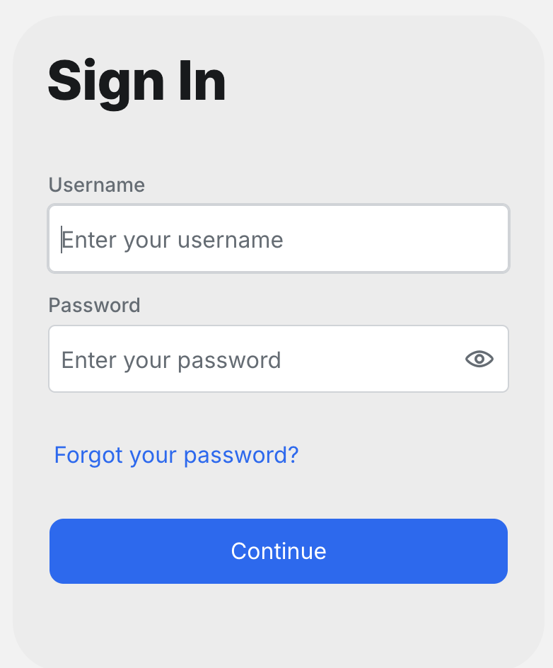
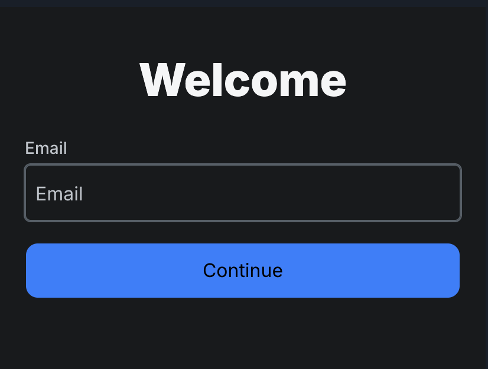

Onboarding Sync
Login experiment status + what's coming with the mobile rebuild.
This week, in 3 cards
The clean-data numbers
We focus on users on fresh devices since the rollout. That excludes users whose phones were already locked into one version from earlier testing, so the split is an even 50/50 and the comparison reads clean.
- Each flow is reaching the same share of users.
- Comparison is fair, no skew to correct for.
- 52% of Flow B users complete login.
- 44% of Flow A users complete login.
- Flow B has stayed ahead every day since the rollout, by 8 to 14 percentage points.
- ~12 accidental signups per week in the 16 weeks before the deploy (Jan-Apr).
- ~3 per week since.
- The pattern is stable across the whole pre-experiment baseline.
- Two thirds of users who pause at the email step come back later.
- The third that doesn't is the watch metric. Steady around a third (was 31% yesterday).
Pre-experiment vs experiment
This view ignores the A/B split. The experiment deployed on Apr 30. We compare the population on the old production login (the weeks before, "pre-experiment") to the population on the new experiment (the weeks after, where users see either Flow A or Flow B). The drop is real regardless of which variant a user landed on.
The 7 weeks immediately before the deploy give a stable, recent reference. If we go back further, the drop still holds.
Each bar is one week. Bar height = number of accidental signups that week. Red = pre-experiment (old production login). Green = experiment (Flow A or B).
How we count an accidental signup: a new solo-barber account whose email already belongs to a barber who is attached to a shop. That overlap means the user almost certainly already had an account through their shop and signed up again by mistake.
Support-ticket data is April and May only because that's the window Tristan asked the CS team to pull. We can extend either view if anyone wants more history.
Zero accidental solo-barber cancellations in May.
Tristan asked McChesney Matro on the CS team to pull cancellation tickets. Support tags every cancellation with a reason. One of the tags is "Accidental Indy Self-Signup", used when a user contacts support to delete an account they signed up by mistake.
- April: 3 tickets tagged as accidental signups.
- May (first 11 days, post full rollout): 0 tickets tagged as accidental.
- May still had 6 total cancellations, but they were for other reasons (Training, Out of Business, or no reason given). None of them were accidental signups.
- Snowflake (8wk baseline): ~13/wk before Apr 30 → ~3/wk after. That is a −77% drop, population-wide.
- CS data: 3 accidental indy cancellations in April → 0 in May. Same direction, independent signal.
- User base grew ~5% across the same window, so the drop is real, not "fewer users".
- From our data (volume read): if a new solo-barber account uses the same email as a barber who's already attached to a shop, it's almost certainly a duplicate. The invited barber didn't realize they already had an account.
- From support tickets (ground truth): the support team tags every cancellation ticket with a reason. "Accidental Indy Self-Signup" is one of those reason tags. No inference needed, the user literally told CS they signed up by mistake.
- Support tickets are the cleanest signal. Our data shows the volume of likely duplicates; tickets show the ones users actually flagged as wrong.
Where each variant wins
Source: users on fresh devices, May 7-13, after full rollout
- Each row shows two independent rates, one per flow.
- The two columns don't have to add up to 100.
- Example. "Forgot-password taps / device" at 30% in Flow A and 21% in Flow B means 30 out of 100 Flow A users tapped it, and 21 out of 100 Flow B users did.
| Metric | Flow A | Flow B | Δ | Winner |
|---|---|---|---|---|
| Traffic split | 50.5% | 49.5% | 0.5 pp from even | Tied |
| Welcome screen reach rate † | 91.7% | 101.4% | +9.7 pp | Flow B |
| Login success rate (of users who saw welcome) | 47.1% | 51.1% | +4.0 pp | Flow B |
| Completion rate (of all users assigned) | 43.2% | 51.8% | +8.6 pp | Flow B |
| Forgot-password taps / device | 30.1% | 21.5% | −8.6 pp | Flow B |
| Abandon events per 100 devices * | 33 | 52 | +19 events / 100 | Flow A |
| New barber signups / device * | 7.2% | 9.8% | +2.6 pp | Flow A |
| Caught invited barbers before duplicate signup (B only) | — | 27.6% | n/a | N/A |
Notes.
† Flow B welcome rate above 100% is a harmless data quirk. Some devices got assigned during the early-ramp days but only triggered their first activity after full rollout, so they show up as welcome-viewers without an assignment event in this slice.
* See the callout below the table for why Flow A "wins" the two starred rows by measurement mechanics, not user experience.
Sample is 22% larger than yesterday's read (771 devices vs 633). Same direction, more confident.
Why two rows look better for Flow A — and why the rest go to Flow B.
Abandons per 100 devices. Flow A has one screen to abandon. Flow B has two (email step, then password step), so it fires more abandon events. The number is larger on B because there are more places to leave, not because users hate the flow. We traced them: 67% of Flow B abandoners come back and finish later.
New barber signups per device. Flow B produces more raw signups (9.8% vs 7.2%). But the rate of accidental signups inside that group is down 77% on the new flow. Flow B has more total signups, fewer of them are duplicates. The ones it catches look like genuine new barbers.
Where Flow B actually wins: overall completion (+9pp), welcome rate (+10pp), forgot-password taps (−9pp), and the duplicate-prevention signal that the support team confirmed at 0 accidentals in May.
Auth is moving to Descope
Auth is moving to Descope, a third-party login service. It can be configured to match either Flow A or Flow B, so the experiment conclusions still apply.
- What changes: login backend and UI come from Descope, not custom code.
- What doesn't: the visual flow we tested can be replicated inside Descope.
- What we keep: the Flow B verdict carries over. We configure Descope as Flow B.
Three views, side by side
Today's production login, vs how Descope can be configured to match either Flow A or Flow B.
Current login (no Descope)

Single screen. Email + password + forgot password + login button. This is what users see right now in production.
One-screen variant

Same shape as today's: username + password on one screen. Easy mapping.
Email-first, two-screen variant


Welcome screen with email first, then password on a second screen. The winning variant from our experiment.
Styling caveat: the Descope screenshots use default styling. Final visual design is @tristan's work, not done yet. I'm only building the functionality / configuration.
What's on the table
- Wait for today's iOS 3.23.1 release (fixes a bug where a few users got bucketed into both flows).
- Microsoft Clarity install on iOS with Yurii, about to deploy. Will let us record sessions and see what users do at the email step.
- Confirm success metric with Eric and Tristan: reducing accidental signups (support-ticket-confirmed) is the agreed signal.
- Coordinate with mobile-rebuild team on configuring Descope to match Flow B.
Everything else is on the tracker
Historical comparison, abandoner followup, scope leak status, friction signals, SRM investigation, raw weekly data per metric.
santi-squire.github.io/onboarding-team-sync/tracker/